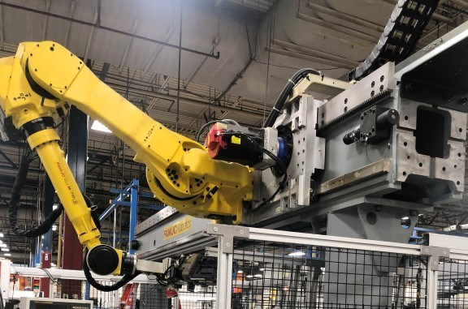
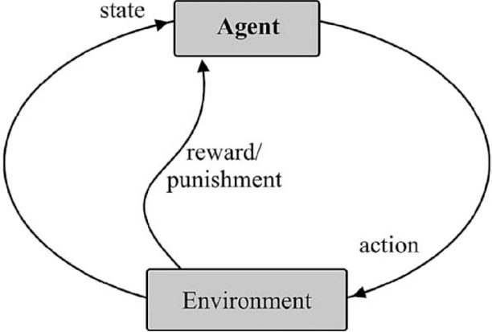
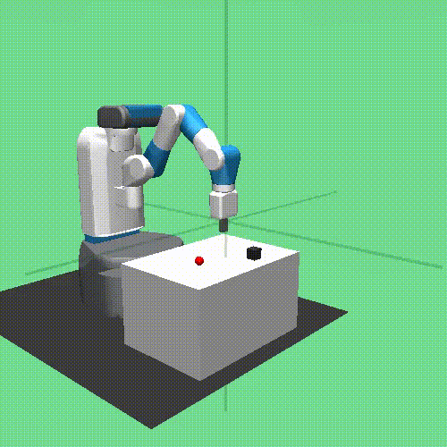
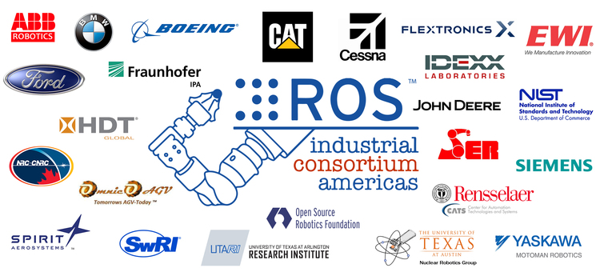

AR-GE Gidişatı
Kuzey & Cengizhan Kaya
Created: 2022-02-13 Paz 22:21
GAWS

Gravity
Autonomous
Welding
System
40 Gün Boyunca Neler Yaptık?
Elimizde var olan 1 senelik proje hakkında..
Yapay Zeka Fikri
- Yapay Zeka, genellikle hesaplaması çok uzun ya da neredeyse imkansız olan problemlerde kullanılır.
- Projemizde robotun yörünge hesaplaması çok uzun sürüyordu. Biz de ilk adımımızı bu yöne attık
- İlk etapta robotik alanında yapay zeka ile yapılmış projelere ve makalelere göz attık.
Inceleme sonucunda Reinforcement Learning adlı bir öğrenme tekniği ile robota istediğimiz işi yaptırmaya çalıştık.
Reinforcement Learning (RL)
Reinforcement Learning Nedir?
- Ceza - Ödül sistemine dayalı bir öğrenmedir.

RL fikrini AR-GE’ye Entegre Etmek
Bunun için OpenAI Gym kütüphanesine baş vurduk


Custom Environment
- Robotumuzu reinforcement learning ile eğitmek için kendi ortamımızı oluşturmaya çalıştık
Bu konuyla uğraşırken çok daha iyi bir şey bulduk..
ROS
- Haberleşme, Simülasyon, Planning Kütüphaneleri
PythonveC++desteği
- Open Source ve Sürekli Güncelleniyor
- Linux üzerinde çalışacağı için
Windows lisansıalmaya da gerek yok
kimseye ROS kullandığımızı söylemek ya da birilerine para vermek zorunda değiliz. dünyadaki bir çok robotik şirketi hali hazırda ros kullanıyor
ROS Industrial

ROS geçen yıllarda sadece araştırma ve hobi projelerinde kullanılmaktaydı. Şimdi ise ROS’un Endüstriyel robotlara entegre etmeye başladılar.
.
- ROS Industrial tarafından şimdilik desteklenmekte olan robotlar. Şurada desteklenen robotları görebiliriz.
- Kendi robotumuzu da istersek yapabiliriz. Yeter ki elimizde şunlar bulunsun;
- CAD data
- Kinematik Parametreleri
Moveit!
Yol Haritası
- Hybrid Planning
- Dairesel Hareket
- Torch Oryantasyonu